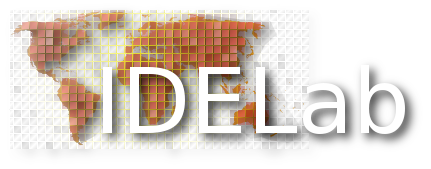

Servidor WFS
WFS GetCapabilities URL:
Capa:
Bounding Box:
Simplificación (algoritmo Douglas-Peucker)
Tolerancia para la distancia entre coordenadas:
(0 para no simplificar)
Estilo 3D (Height=zAttribute/Scale)
zAttribute:
Escala: